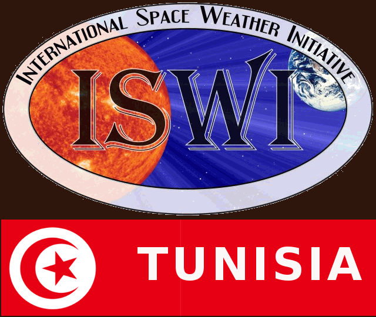

LSAMA's Very Low Frequencies (VLF) team at the University of Tunis El Manar is part of the International Space Weather Initiative (ISWI), a program founded and established by the Committee on the Peaceful Uses of Outer Space (COPUOS) within the United Nations Office for Outer Space Affairs (UNOOSA). Our team studies the Earth's electrical environment through the effects of thunderstorm activity, seismic activity, solar activity, volcanic activity and solar eclipses on its upper atmosphere composed of ionosphere and magnetosphere as well as radiation belts.
